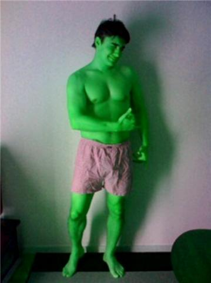

|
Fukuda Denshi, Sunday 22nd November.
Andre bags two and Kuni one, as Hibs beat a strong Lions team.
The Hibs limited the Lions to only a few half chances as Andre and Kuni did the damage at the other end. 0-0 at Half time, the Hibs remained calm, scoring a few minutes into the second half. Josh struck a curving free kick off the bar which Pinto followed in well to head home. 1-0 Hibs.
Andre got his (and Hibs') second of the game (5th of the season) to give Hibs much needed breathing space, as the Lions upped the pressure.
A strong looking Lions team, chasing the game pushed men forward looking for a way back in but were caught again on the counter via Edu (at the current time playing the holding role in midfield.....). Edu played a well-weighted pass through to Kuni who slotted calmly past Orlando.
3-0 Hibs the final score. The first half was evenly contested with both teams moving the ball well. Once the Hibs got the first early in the second half, the game looked like it would only go one way and that it did.
Special mention to the Lions referee's assistant, all three goals were not offside, which he judged honestly and fairly even under intense pressure from his own team. If other assistants were to act in the same manner, the TML would be an even better place to play competitive football. Three cheers for the Lion's Assistant- Mo.
Hibs MOTM: Eduardo Romaneiro.
Report by Mike McGirr
|